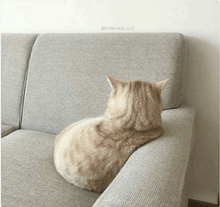

Les styles d'attachement
Le 3 janvier 2024 par Firas
Introduction

Selon la théorie de l'attachement, il existe 4 styles d'attachement. Ces styles d'attachement sont crées pendant le développement de l'enfant, et peuvent se traduire (si non identifiés et non traités) par des relations toxiques avec son entourage.
Nous verrons quels sont les 3 styles primaires, puis nous aborderons leurs origines et enfin, nous irons voir les différentes méthodes pour soigner les styles d'attachement insécures.
Les 3 styles d'attachements principaux
L'anxieux
Pourquoi tout le monde m'abandonne, ne me laissez pas seul.e ...
Définition
Ce style fait partie de la catégorie des "insécures". Le style d'attachement dit "anxieux", se traduit par une hyper-activation du système affectif en cas de stress. Ce système hyperactif se traduit par plusieurs comportements:
- La dépendance affective
- L'anxiété
- Une basse confiance envers l'autre et soi-même.
- Reproches infondées : le cerveau va imaginer constamment un scénario catastrophe (abandon, trahison etc ...) et l'individu fera des reproches
Origine
Le style anxieux provient de figures d'attachement instables, incapables de donner une affection stable et continue. En effet, pendant le développement de l'enfant, lorsqu'il a besoin d'affection et que sa figure d'attachement principale (père/mère/parent) lui donne cette affection de manière inconsistante, cela va créer un système d'affection hyperactif.
Tantôt chaleureuse, tantôt colérique ou distante, la figure principale d'attachement est incapable de donner un attachement stable, l'enfant se remet donc tout le temps en question, il ne peut plus se faire confiance, et il ne peut plus faire confiance à sa figure d'attachement.
Il y a donc une absence d'attachement sécurisant. Et l'enfant est incapable de créer des relations sécurisées avec les autres. Il va donc automatiquement suivre le schéma qu'on lui a légué; c'est à dire l'attachement anxieux.
En outre, si l'enfant n'identifie pas ce style, il agira comme son parent, et continuera la boucle sur son enfant.
Exemples
- La/le partenaire jalouse/jaloux
- Le parent hyper-protecteur
- La/le partenaire dépendant.e émotionnellement
Soigner
Discipline
Avec la discipline, on se fait bien plus confiance. On a confiance en soi, on sait que notre personne est digne de confiance, et donc les autres nous font confiance.
Brisement du quatrième mur
Cela consiste à identifier ce qui active le système d'attachent hyperactif et à pouvoir prendre de la distance avec ses émotions, et à les comprendre.
Note à moi même: Attention à ne pas minorer ses besoins psychologiques, se soigner du style anxieux ne veut pas dire tomber dans le style distant !
Le distant
Je n'ai besoin de personne. Je peux me débrouiller seul.e.
Définition
Ce style d'attachement fait également partie des styles insécures.
Le style d'attachement dit "distant" se traduit par une désactivation du système affectif en cas de stress émotionnel.
Cette désactivation se traduit par plusieurs comportements.
- Minimiser ses émotions et ses besoins relationnels
- Froideur et distance envers les autres
- Faible estime de soi
- Manque d'assurance et d'amour de soi
Origine
Le style d'attachement distant vient de figures parentales peu (voir pas) présentes psychologiquement.
Lorsque l'enfant exprimait ses besoins, le parent les rejette, les invalide ou les juge ("je vais te donner une raison de pleurer", "pleure pas c'est rien", violence verbale/physique ...).
L'enfant, afin de se protéger et débrouiller, va donc apprendre à désactiver son système d'attachement, et feinter une indépendance affective. Alors qu'il a besoin de cette affection.
Exemples
- Le parent très strict et/ou froid
- Le/la partenaire insensible et distant
- Le "sigma"
Soigner
Méditation
Avec la méditation, on entraîne le cerveau à être alerte et concentré plus longtemps et efficacement. Cela permet donc de reconnaître les automatismes d'attachement, et donc des les contrôler pour éviter qu'ils ne nous contrôle.
Verbaliser les émotions
Afin de pouvoir identifier les émotions et les sentiments qui nous traversent, mettre des mots dessus peut s'avérer très constructif. En effet, communiquer ce que l'ont ressent nous pousse à sortir de notre zone de confort, d'avoir de nouveaux points de vue, et donc de pouvoir mettre en place une relation sécure avec soi-même et l'autre. Par exemple, parler à quelqu'un qui répondra de manière sécure et sans jugement permet de se soigner plus facilement du style distant.
Brisement du quatrième mur
Cela consiste à identifier ce qui désactive le système d'attachent et à pouvoir prendre de la distance avec ses émotions, et à les comprendre. Et donc de pouvoir les contrôler afin d'avoir un attachement plus sain.
Le sécure
J'aime ma vie, et les gens dedans
Définition
Ce style d'attachement considéré comme "sécure".
Selon la théorie de l'attachement, le style d'attachement sécure permet à l'individu de s'attacher fortement à une personne tout en gardant une solide indépendance (le juste milieu entre anxieux et distant).
En cas de stress ou de besoin affectif, le style d'attachement sécure est activé, des besoins d'affection sont exprimés, puis généralement soulagés par le proche.
Ce style d'attachement apporte plusieurs bénéfices:
- Relations généralement saines et longues avec les autres
- Haute estime de soi et confiance en soi
- Être un refuge affectif et pouvoir se réfugier chez les autres
- Développement sain et sécurisé de l'individu dans sa vie
Origine
Lors de son développement, lorsque l'enfant avait besoin de soutien affectif ou psychologique, son parent le soulageait de manière inconditionnelle et consistante. Il y avait peu de distance émotionnelle et peu (voir pas) de violence psychologique/verbale. L'enfant est donc capable d'explorer le monde avec sécurité car il sait qu'en cas de besoin affectif ou logistique, il peut compter sur son parent.
Soigner
Si toi, tu lis cette section et que tu t'y reconnais. Bah profite bien, de moins en moins de gens ont cette chance de pouvoir s'attacher sans se casser la tête.
Conclusion
Une des peurs primaires de l'être humain est d'être seul. À l'époque préhistorique, être seul signifiait la mort. C'est donc normal d'avoir peur d'être seul, et pour pouvoir éviter cette situation, il faut passer au style d'attachement sécure.
Le style d'attachement est donc variable. On peut l'améliorer et améliorer les relations autour de soi avec de l'effort et de l'écoute (que ce soit les autres, ou soi-même), et tendre vers le style d'attachement sécure.
Enfin, si vous ne connaissez pas le plan du développement psychologique. Le voici :
- Incompétent.e Inconscient
- Incompétent.e conscient.e
- Compétent.e conscient.e
- Compétent.e Inconscient.e
La plupart des gens insécures sont incompétents et inconscients à s'attacher de manière sécure. Il sont donc à l'étape 1. En lisant cet article, j'espère que plus de monde sera capable de passer à l'étape 2. C'est à dire de se rendre compte de ce qui empêche un attachement sain, et de réfléchir à des solutions viables, et d'essayer de les mettre en place.
Sources
- Théorie de l'attachement Wikipedia
- Étude sur le style d'attachement Kenneth N. Levy, William D. Ellison, Lori N. Scott, and Samantha L. Bernecker, Université d'État de Pennsylvanie, Research Gate
- Attached de Amir Levin et Rachel S. F. Heller Livre EPUB
- Expériences sur l'attachement sur enfants en bas âge